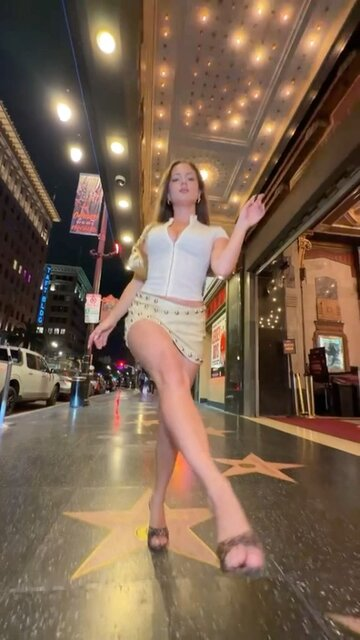
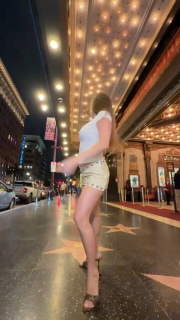

Step 3 Read the motion
Timed by the body, named by a model
A pose tracker measures every move with its time. A vision model on your Mac looks at exactly those frames and puts the moves into words.
Body-pose tracker · this clip · 7 s
faces the camera · 0–5.5 s
left arm raised
turns away · 5.5 s
back to us
turns back
0 s1234567 s
0.00 s

1.25 s5.50 s

6.50 sThe frames shown to the model are the ones where a move starts, so its times come from the video, not from a guess.
→
Local vision modelMLX · Qwen3-VL
- camera
- low-angle handheld backward tracking shot
- beats
- runway cross-over walk, a light left-hand flourish, turn away over the shoulder, turn back
- shot
- full-body shot of one person
- feet
- on the ground most of the clip, so contact shadows go in
Adapted to your character
It writes what the body does, never the dancer's own clothes: "hand at the hip", not "hand in the jeans pocket" that a skirt doesn't have. Sunglasses and hats don't carry over.
Vision body poseMLXor Apple's on-device modelOn your Mac · free
 Swapjutsu
Swapjutsu